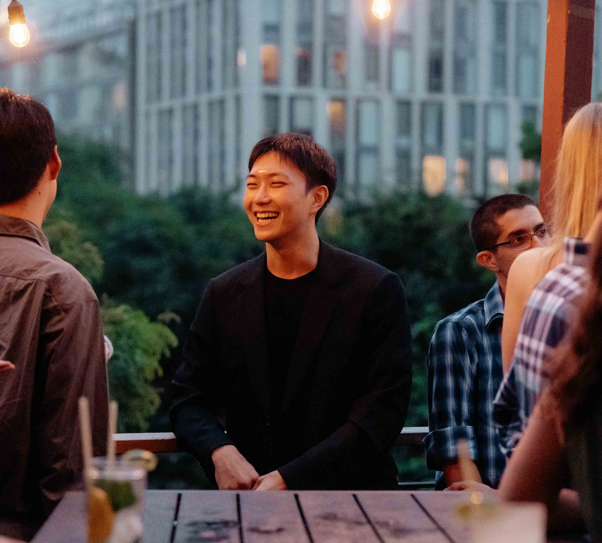

hey, i'm seungwook.

i'm seungwook, from seoul, korea.
in my research, i've been thinking about how we're shifting from a compute-bound to a data-bound paradigm. we can now learn from data far faster than we can generate it ourselves—at least for text and images. this raises a question: how do we move beyond the limits of "real" data? my work has been leaning toward synthetic data. under that broad umbrella, i've been exploring how we can use synthetic data to learn a universal representation or prior that can quickly adapt across modalities.
outside of research, i love playing squash. i've been at it for about 2.5 years, still learning, but it's been a lot of fun. i welcome anyone to join me in this small endeavor to live a longer, healthier life.
currently, i'm at MIT CSAIL as a 4th-year PhD student, advised by Prof. Pulkit Agrawal.
a few achievements:
- magna cum laude from Columbia
- founded a korean squash club at MIT
- got the NSF CSGrad4US Graduate Fellowship
some publications i've worked on:
- General Intelligence Requires Reward-based Pretraining by Seungwook Han, Jyothish Pari, Samuel J. Gershman, Pulkit Agrawal. ICLR 2025 Spotlight (top 2.5%).
- Emergence and Effectiveness of Task Vectors in In-Context Learning: An Encoder Decoder Perspective by Seungwook Han, Jinyeop Song, Jeff Gore, Pulkit Agrawal. ICLR 2025 Spotlight (top 2.5%).
- Value Augmented Sampling for Language Model Alignment and Personalization by Seungwook Han, Idan Shenfeld, Akash Srivastava, Yoon Kim, Pulkit Agrawal. ICLR 2024 Workshop on Reliable and Responsible Foundation Models (Oral Talk).
- Compositional Foundation Models for Hierarchical Planning by Seungwook Han, Anurag Ajay, Yilun Du, Shuang Li, Abhishek Gupta, Tommi Jaakkola, Josh Tenenbaum, Leslie Kaelbling, Akash Srivastava, Pulkit Agrawal. NeurIPS 2024.
- Equivariant Contrastive Learning by Rumen Dangovski, Li Jing, Charlotte Loh, Seungwook Han, Akash Srivastava, Brian Cheung, Pulkit Agrawal, Marin Soljačić. ICLR 2022.
more to see on google scholar and more to come.
books i'm reading:
- build by Tony Fadell
- what if? by Randall Munroe
- future of capitalism by Paul Collier